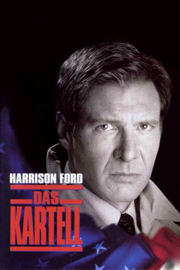

#1566 Jack Ryan 3 - Das Kartell
Alternativ: Clear and Present Danger
Auszeichnungen: für 2 Oscars nominiert
 
 IMDB-Wertung: 6.9 / 10
IMDB-Wertung: 6.9 / 10  Metascore: 74
Metascore: 74 
Ein enger Freund des amerikanischen Präsidenten wird mit samt seiner Familie ermordet. Jack Ryans erste Ermittlungen ergeben, dass der Mann Verbindungen zu einem kolumbianischen Drogenkartell hatte. Der Präsident sieht rot, und ordnet eine geheime militärische Operation an, um den Dorgenbossen Einhalt zu gebieten. Ryan wird aber darüber nicht nur nicht informiert, sondern soll auch noch ohne sein Wissen die Gelder dafür locker machen…
Jahr: 1994
Dauer: 141 Minuten
FSK: 12
Land: USA Studio: Paramount PicturesTonspuren: DD5.1 - ,
Untertitel: Deutsch, Englisch,
Auflösung: 1080p (1920x848) Größe: 6922 MB
Genre: Action, Krimi, Drama, Thriller
Regisseur:  Phillip Noyce
Phillip Noyce
Drehbuch: Tom Clancy, Donald E. Stewart, Steven Zaillian, John Milius
Soundtrack: James Horner
Darsteller:
Datei: X:\5-Pentalogie(A-Z)\Jack Ryan\Jack Ryan 3 - Das Kartell (1994, FSK12, 1920x848).mkv seit 22.07.2015
Festplatte: HD Collection-3(N-Z)-6(A-Z)
 Es gibt insgesamt 8 Filme in der Gruppe '5-Pentalogie(A-Z)\Jack Ryan'
Es gibt insgesamt 8 Filme in der Gruppe '5-Pentalogie(A-Z)\Jack Ryan'